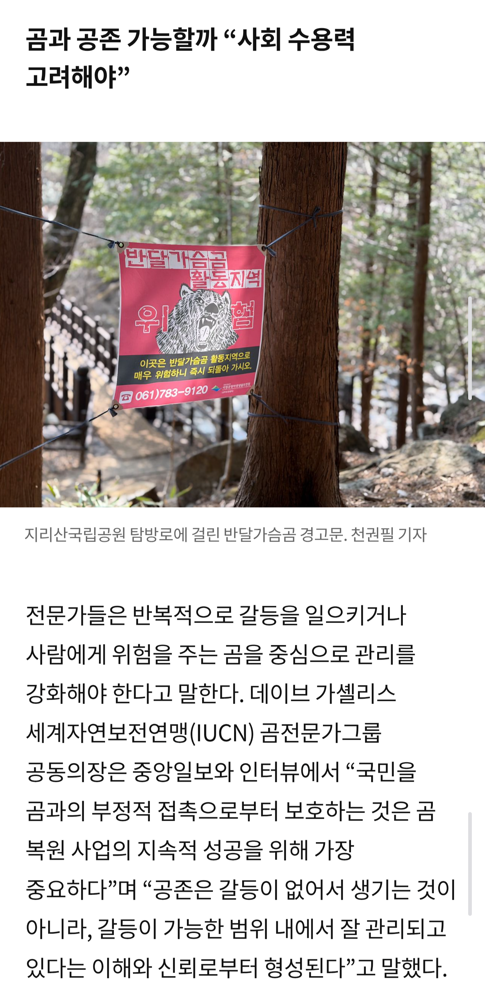
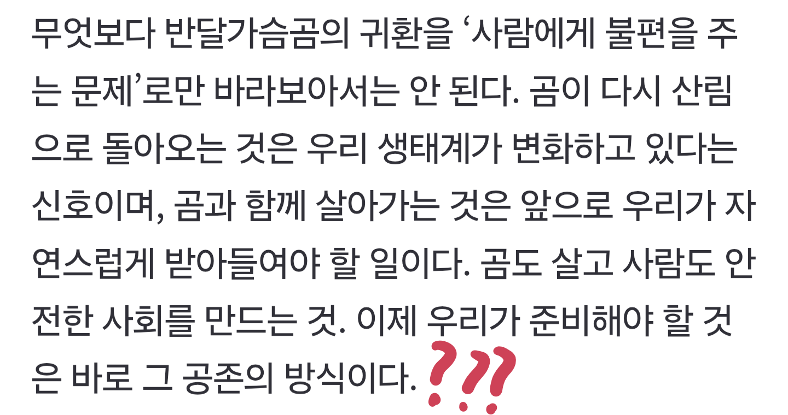

어린애들 까지 공존이란 단어만으로 써먹어 이용해먹음

이좆만한 땅에서 아득바득 되지도않은 짓거리해가며
대책은 단하나도없고 공존만 외침.

1.사람에 불편을 주는 문제로만 바라보지말라
2.곰이 다시 산립으로 돌아오는 것은 우리 생태계가 변화하는 신호
3.곰과 함께 살아가는 것은 우리가 자연스럽게 받아들여라
4.아무튼 대책따위는없고 공존하랑께
위내용 정면 반박쓰자면
1.불편을 넘어 사람을 잡아먹는다
2.뭔변화? 100년간 곰없다고 생태계 문제있었냐? 산지에도 아파트깔고 집짓는나라에서 사람사는 서식지까지 내줘야하냐? 안전사람도 준비해라며 굳이 없던 재앙을 싸질러내고 곰이 상전 인가?
3.콩알만한 한반도 땅에 자연스럽게 받아들여라? 지집앞마당에 풀고 자연스럽게 받아들일수있나 해보자
4.???
진짜로 책임 단하나조차 없는 유쾌함에만 젖어서
만들어낸 방종과 쾌락...
이건 진짜목적은 사람이 잡아먹혔다는 소릴 듣기위한거임 장르중에 보어 머시기같은거 있는데 그거임